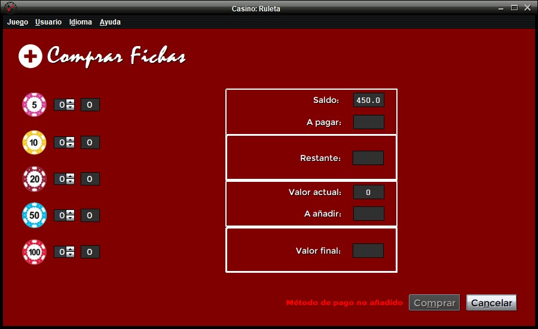
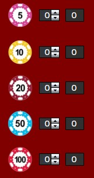
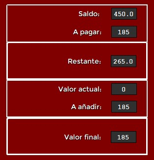
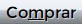

Comprar Fichas
Al acceder a este menú, el usuario encontrará la siguiente pantalla:

El panel de compra de fichas dispone de las siguientes áreas:
- El panel para la selección de las fichas a adquirir, situado a la izquierda.
- Un cuadro en el que se muestra el saldo y valor del usuario con respecto a las fichas deseadas.
- Botones de Comprar y Cancelar, además de un aviso en caso de que el usuario no haya vinculado un método de pago.
Panel de selección
En este panel se puede seleccionar las fichas deseadas para su compra:

Dentro de este, se muestra el icono correspondiente a la ficha de cada tipo, además de un selector numérico,
de forma que el usuario pueda accionar las flechas para incrementar o decrementar el número de fichas deseadas de cada tipo.
También es posible acceder a cada selector mediante la combinación de teclas: "Alt" + cualquier número del 1 al 5 ambos incluidos.
De esta manera, como ejemplo, la combinación de teclas "Alt" + 1 corresponde al selector de fichas de 5€.
Además, a la derecha del selector se muestra un cuadro con el hipotético número de fichas de ese tipo
de las que dispondría el usuario tras realizar la compra de ese número de fichas indicado en el selector.
Cuadro de cálculos
Tras seleccionar las fichas deseadas, este panel se rellenará con una serie de valores numéricos:

- Saldo: Saldo disponible del usuario antes de realizar la compra.
- A pagar: Saldo a restar por la compra de las fichas seleccionadas.
- Restante: Resultante de la resta del saldo menos la cantidad a pagar.
(El campo Restante mostrará un aviso en color rojo cuando no haya saldo suficiente para realizar la compra)
- Valor: Valor total constituido por las fichas poseídas por el usuario antes de realizar la compra.
- A añadir: Valor que se añadirá al valor del usuario por la compra de las fichas seleccionadas.
- Valor final: Resultante de la suma del valor a añadir al valor antes de la compra.
Los campos A pagar y A añadir aparecerán vacíos si no se selecciona ninguna ficha a comprar.
Botones
El usuario dispone del botón  y del botón  en base a lo que quiera hacer con su compra de fichas.
Nótese que el botón Comprar permanecerá deshabilitado mientras el usuario no interactúe con los selectores.
Para confirmar la compra de fichas seleccionadas, bastará con pulsar el botón Comprar.
En caso contrario, si el cliente decide anular la compra, pulsará el botón Cancelar y volverá a la pantalla de juego.
en base a lo que quiera hacer con su compra de fichas.
Nótese que el botón Comprar permanecerá deshabilitado mientras el usuario no interactúe con los selectores.
Para confirmar la compra de fichas seleccionadas, bastará con pulsar el botón Comprar.
En caso contrario, si el cliente decide anular la compra, pulsará el botón Cancelar y volverá a la pantalla de juego.